🎯 入門 導演在做什麼？
- 視覺翻譯：把劇本文字翻譯成攝影機能拍到的畫面
- 情緒設計：設計觀眾每個時間點應有的情緒
- 節奏控制：決定什麼時候快、慢、或沉默
- 演員引導：用具體情境描述讓演員進入狀態
💡 告訴演員「你很傷心」是抽象指令。告訴他「你剛知道爸爸不會出席婚禮，但還在辦公室，必須撐著」才是具體情境。
🔍 入門 景別說什麼話
| 景別 | 看到什麼 | 傳遞情感 |
|---|
| 大遠景 | 整個環境，人很小 | 孤立、渺小、壓迫 |
| 遠景 | 全身＋環境 | 建立空間感 |
| 中景 | 腰部以上 | 日常對話感 |
| 中近景 | 胸部以上 | 親密感、情緒聚焦 |
| 特寫 | 臉部填滿畫面 | 情緒爆發，看見內心 |
| 大特寫 | 眼睛/手/物件 | 強烈戲劇性 |
基本原則：一個場景至少三種景別。通常：遠景建立 → 中景動作 → 特寫情緒。
📐 入門 攝影機運動語言
固定鏡頭（Static）
攝影機完全不動。給觀眾安全感，情緒沉澱多用固定。最基礎也最重要的鏡頭，廣告片中大量使用。
推鏡（Dolly In）
攝影機向前移動，逐漸靠近主體。強調重要性，讓觀眾更靠近角色內心。情緒升溫時的經典用法。
拉鏡（Dolly Out）
攝影機向後移動，主體變小，背景變多。製造疏離感、孤立感，常用在角色做出選擇、承受結果之後。
橫移（Tracking）
攝影機左右平行移動，跟隨主體。增加畫面的流動感與空間深度感。走路場景、對話場景都適用。
手持（Handheld）
輕微晃動感。紀實感、不安感、緊張感——但晃動要有控制，不是亂搖。衝突、追逐、主觀視角常用。
一人組運動鏡頭工具優先順序：
穩定器（推/拉/追）
滑軌（橫移/推拉）
三腳架（固定）
手持（輕微晃動）
🎭 進階 引導演員的技術
- 說情境，不說情緒：「你等了他三小時，快撐不住了」而非「你很累」
- 給具體物理動作：「把手機放進口袋，深呼吸，再轉身」
- 給對比參考：「比剛才再慢一點，像在水裡走路」
- 重複到自然：第一次找感覺，第二次修正，第三次才是真的
一人同時顧攝影和演員
- 先跟演員走一遍，確認動線和情緒節點
- 架好攝影機，做好對焦，鎖定曝光
- 站在攝影機旁邊（不是後面），同時看演員和畫面
- 喊Action前最後一句話：給演員那個具體情境
🧠 進階 場面調度
畫框內的位置代表權力關係
- 畫面中央 → 主導感
- 畫面邊緣 → 弱勢、邊緣化
- 前景大、背景小 → 前景掌控情勢
- 人被框在門窗之間 → 被困住、受限制
顏色在畫面中說話
- 暖色（橙黃紅）→ 溫暖、危險、活力
- 冷色（藍綠）→ 孤立、理性、壓抑
- 對比色並排 → 衝突、張力
🏆 高級 建立視覺風格聖經
- 參考板：收集20～30張目標感覺的圖片，找共同特徵
- 色調決定：主色是什麼？teal & orange、冷藍、還是暖黃？
- 景深風格：全片淺景深還是深景深？
- 運動風格：以固定為主，還是流動感強？
💡 推薦參考：泰國廣告（情感深度）、日本廣告（空間美學）、台灣人壽系列（本土情感連結）
☀️ 入門 曝光三要素
快門速度
拍影片固定法則（快門 = 幀率 × 2）：
24fps → 快門 1/50
30fps → 快門 1/60
60fps（慢動作）→ 快門 1/120
光圈（f值）
- f1.8 / f2.0 = 大光圈，背景虛化，電影感強
- f5.6 / f8.0 = 小光圈，前後都清晰
- 手機主鏡頭通常固定在f1.8，不能調整
ISO感光度
- 白天室外：ISO 50～200
- 室內有燈：ISO 400～1600
- 夜間：盡量不超過 ISO 3200
⚠️ 最常見的錯誤：讓手機自動控制所有參數。自動模式會讓兩台手機畫面對不上。拍攝前一定要手動鎖定所有參數。
🖼 入門 四個構圖法則
① 三分法則（最重要）
把畫面想成九宮格，主體放在四個交叉點之一，而非正中央。人物的眼睛、關鍵物件、地平線，都是放在這些點或線上。製造視覺張力，讓畫面更有動感。
② 引導線
利用場景中現成的線條——道路、欄杆、建築邊緣、光影分界——把觀眾的視線引導到主體上。自然存在的線條比刻意擺設的更有力量。
③ 前景框架
FOREGROUND FRAMING · 畫面中的畫框
用前景物件（窗框、門框、樹枝、拱門）框住遠處主體。除了製造空間深度感，還會給觀眾一種「偷看」的窺視感，讓畫面有層次。
④ 留白（Looking Room）
人物看向的方向要留空間。如果角色看向右方，右側就要有足夠的空白。違反這個規則會讓畫面窒息——左邊這張圖，人物看向右，右側有空間呼吸；右邊這張，人物貼著右邊框，視線無處可去，畫面立刻感覺壓迫。
💡 構圖沒有對錯，只有「有沒有意圖」。打破規則是可以的，但你要知道你在打破它，而且知道為什麼。
🌀 進階 手機製造淺景深
景深就是畫面中「清晰範圍」的深淺。淺景深（主體清晰、背景虛化）是電影感最重要的來源之一。同一個場景，用不同光圈拍，感覺完全不同：
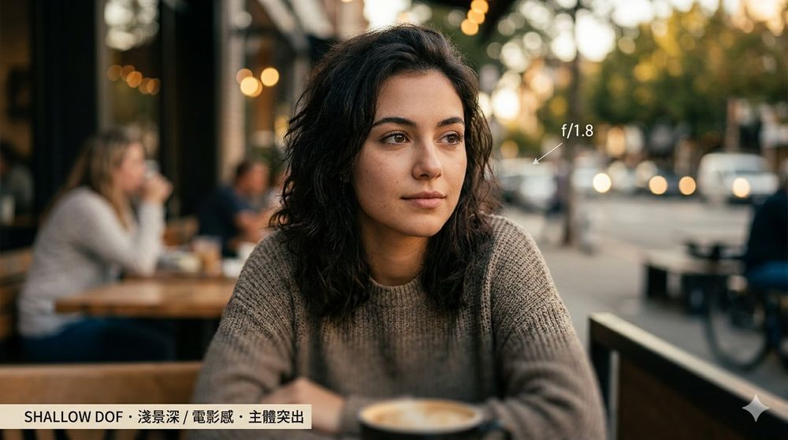
SHALLOW DOF · 淺景深
背景虛化、主體突出，電影感強，情緒集中在人物身上。
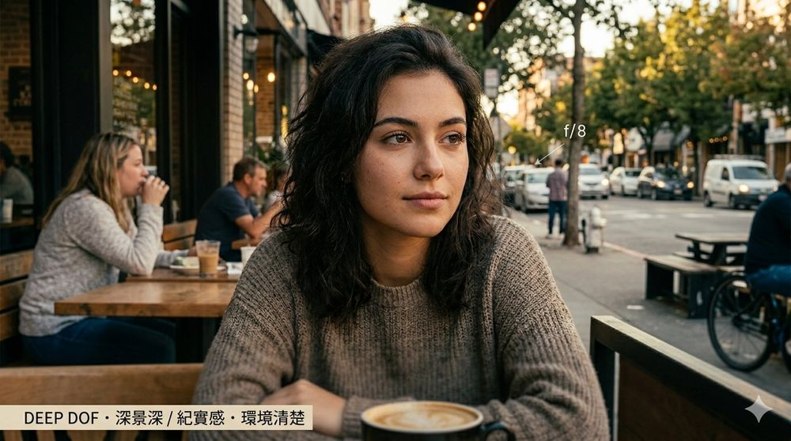
DEEP DOF · 深景深
前後都清楚，環境交代完整，紀實感強，觀眾看見完整世界。
如何用手機製造淺景深
- 靠近主體：鏡頭越靠近，背景虛化越強
- 拉開背景距離：主體和背景間距越遠，虛化越強
- 使用主鏡頭（1x）：用腳靠近，不要用數位變焦
- 避免人像模式：算法虛化有鋸齒，光學虛化更自然
SHALLOW DOF FORMULA · 淺景深公式
手機主鏡頭光圈固定在 f/1.8，不能調整。要做出淺景深效果，靠的是「距離控制」——把鏡頭移近主體，同時把主體和背景拉開。
🎞 進階 LOG格式拍攝
LOG是低對比、低飽和的格式，為後製調色保留最大空間。就像照片的RAW格式——拍出來時不好看，但給後製最大的發揮空間。
LOG 工作流程：從原始素材到成片
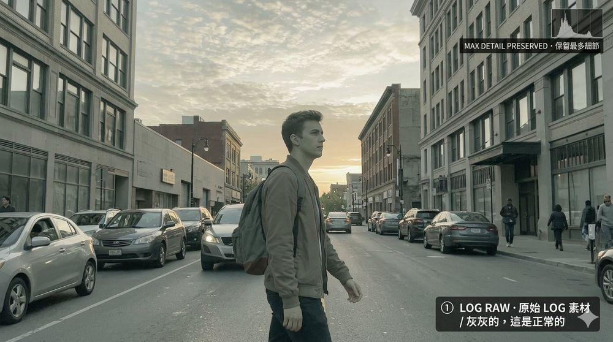
① LOG RAW · 原始素材
畫面灰灰的、低對比、低飽和。這是正常的——LOG 刻意把所有細節壓在中間調，保留最多亮部和暗部資訊。
↓ 後製調色
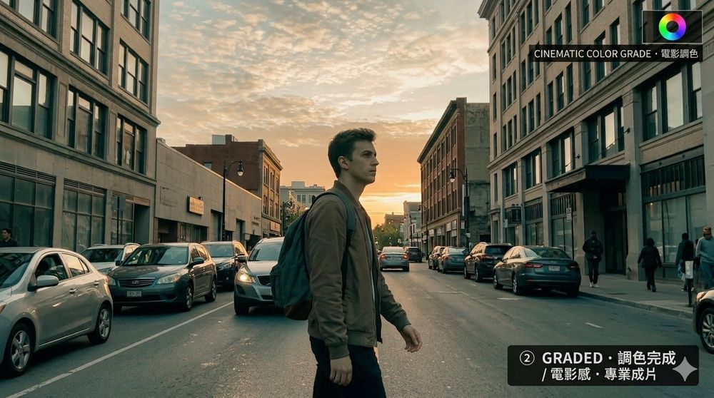
② GRADED · 調色完成
經過調色軟體（DaVinci Resolve 等）處理，對比、飽和度、色調全部重塑，做出電影感。這才是 LOG 格式的最終目的。
對照組：標準模式直接拍
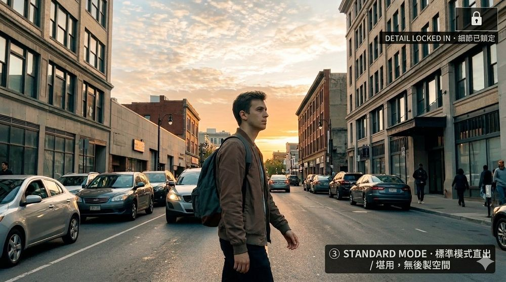
③ STANDARD MODE · 標準模式直出
手機自動處理完直接給你「堪用」的畫面。好處是拍完就能用，缺點是對比和顏色已被鎖定，後製空間很小。
S22/S23 啟用 LOG 的方法
- 安裝 Expert RAW（Samsung官方免費）→ 選擇 Log 格式
- 或使用 Filmic Pro（付費）→ 選擇 Log-V2
該用哪個模式？決策流程
DECISION FLOW · 選擇指南
⚠️ 沒打算調色就不要拍 LOG。拍了 LOG 卻直接輸出，成品會灰灰的不好看。簡單的規則：會後製 → 拍 LOG；趕時間交件 → 拍標準模式。
🔬 高級 攝影師的眼睛訓練
- 看光：走在街上注意光從哪裡來，陰影方向，光的顏色和軟硬
- 看構圖：把手機橫起來當取景器，練習「框」眼前的場景
- 看電影：暫停每個好看的鏡頭，分析為什麼好看
推薦用來訓練眼睛的電影
- 《花樣年華》王家衛 — 構圖、色彩、慢快門
- 《寄生上流》奉俊昊 — 場面調度、階級象徵構圖
- 《大娛樂家》— 移動攝影、色彩對比
🌅 入門 硬光 vs 軟光
同一個人、同一個角度，只是換了光源的大小，整個畫面的情緒就完全不同：
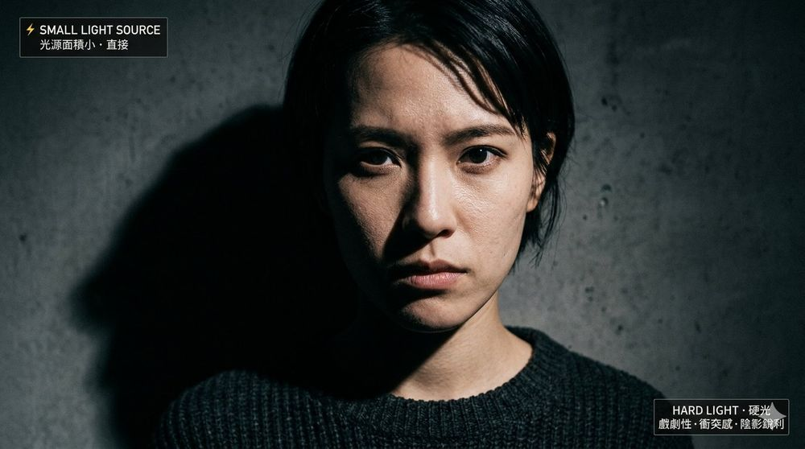
HARD LIGHT · 硬光
陰影銳利、對比強烈。戲劇性、衝突感、緊張感。適合情緒爆發或黑色電影感場景。
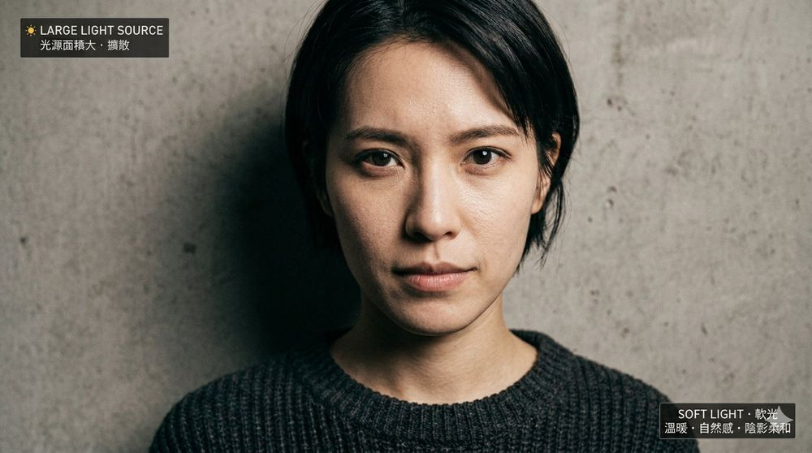
SOFT LIGHT · 軟光
陰影柔和、過渡自然。溫暖感、親密感、商業美感。廣告微電影最常用。
為什麼會有軟硬差別？光源大小決定一切
LIGHT SIZE = LIGHT QUALITY · 光源大小決定軟硬
光源相對於主體越大 → 光越軟。這是物理原理：大光源從多個角度包覆主體，陰影邊緣自然被擴散；小光源只從一個方向直射，陰影邊緣銳利。
- 硬光來源：正午太陽、裸燈泡、手電筒、小型 LED
- 軟光來源：多雲天空、大面積窗戶、柔光箱、白牆反射
- 硬光變軟光：在燈前加描圖紙、柔光布或大面積柔光箱，讓小光源變成大光源
廣告微電影幾乎都用軟光。軟光讓皮膚好看、情緒溫暖、觀眾有親近感。硬光保留給衝突、回憶、噩夢、審訊等特殊戲劇場景。
🪟 入門 自然光：最好的免費燈具
如何挑選一個好的窗戶
- 面積夠大（落地窗最好）
- 北面最穩定，東面早上好，西面下午好
- 有薄白窗簾可柔化直射陽光
- 周圍沒有其他顏色的光源干擾
WINDOW ORIENTATION · 窗戶方位指南
北面窗全天光線最穩定柔和，是拍攝首選。東面窗適合上午9～11點，西面窗適合下午3～5點。南面窗正午陽光直射過強，需要窗簾柔化，否則容易過曝。
人與窗的三種位置
同一個人，只是改變他相對於窗戶的方向，整個畫面的情緒就完全不同：
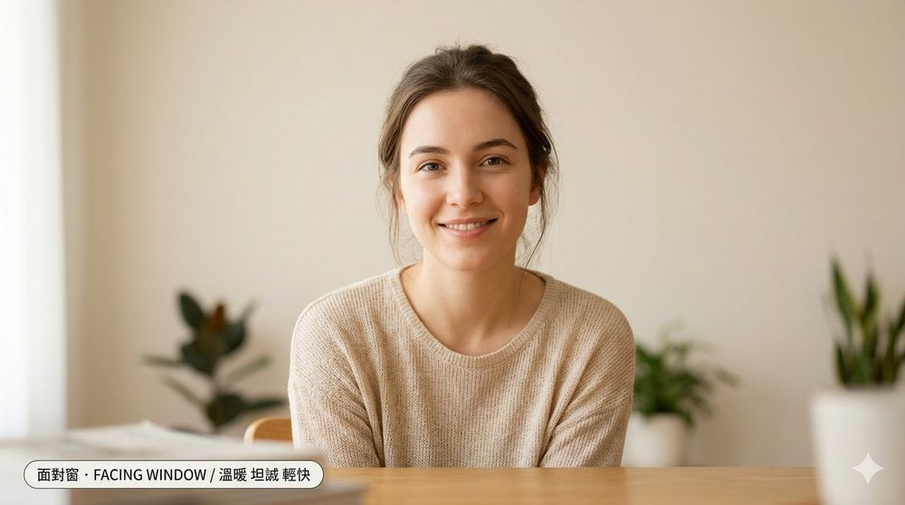
面對窗
FACING · 溫暖 坦誠
臉部均勻受光，無明顯陰影。適合輕快、開朗、日常對話場景。
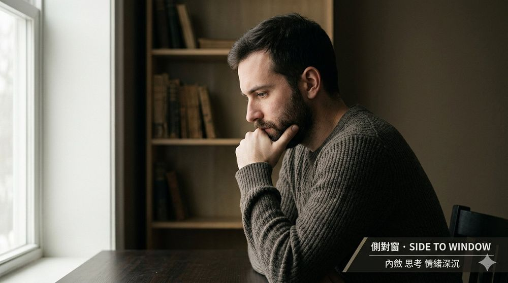
側對窗
SIDE · 思考 深沉
一半亮一半暗，立體感強。適合內省、思考、情緒複雜的場景。
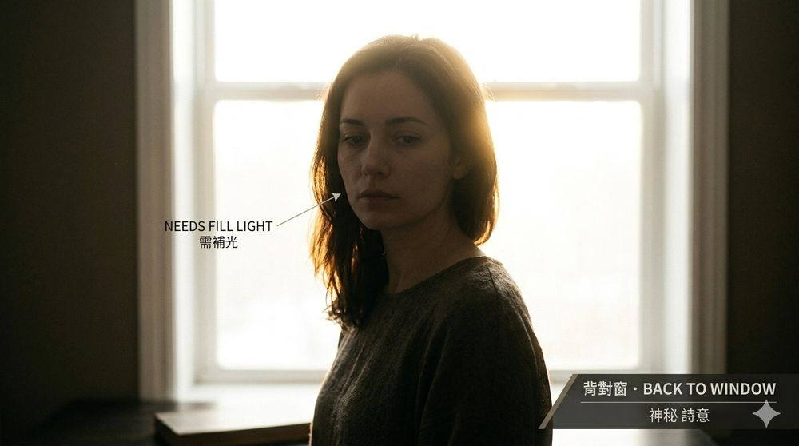
背對窗
BACK · 神秘 詩意
輪廓光效果，臉部偏暗。需要反光板補光，否則臉會全黑。
💡 入門 三點布光步驟
三點布光位置：
[背光 Hair Light]
↓
[主光] ──── 人物 ──── [補光]
45度角 主光40-60%亮度
高於眼睛水平 可用反光板代替
Step 1：主光（Key Light）
STAGE 1 · 只有主光
人物前方45度角，高度比頭頂高15～20度。先只開這盞調好，其他都關掉。這時臉的一側會有明顯陰影——正常。
Step 2：補光（Fill Light）
STAGE 2 · 主光 + 補光
放在主光對面，亮度約40～60%。可用反光板代替。讓陰影有層次但不死黑。兩側受光，但主光側仍然較亮。
Step 3：背光（Back/Hair Light）
STAGE 3 · 完整三點布光
人物後方偏側面，打亮頭髮和肩膀。讓人物從背景「浮」出來，有立體感。這是完整三點布光，人物輪廓明顯與背景分離。
💡 三點布光是起點，不是公式。覺得太平？補光減弱。覺得太戲劇？補光加強。
🎨 進階 色溫與情緒
色溫決定畫面情緒。同一個場景，只要改變色溫，感受完全不同。
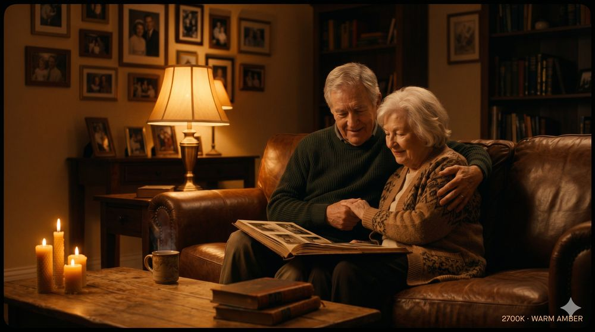
2700K · 橙黃暖光
溫暖 · 親密 · 懷舊
居家、燭光、傍晚
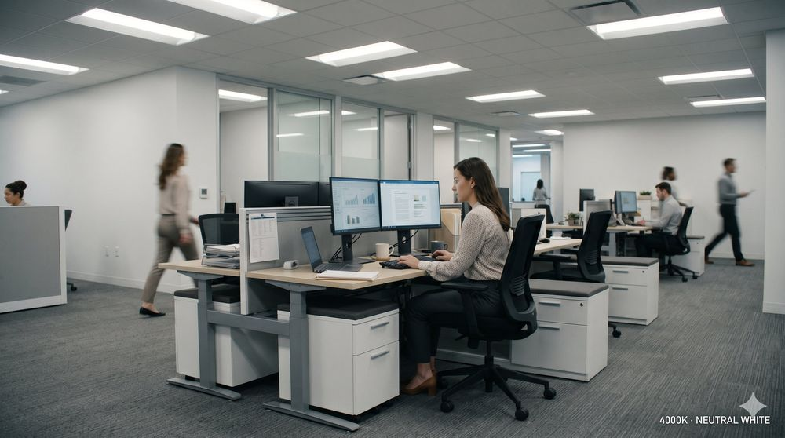
4000K · 中性白光
專業 · 日常 · 中性
辦公室、日常
5600K · 日光白
清新 · 自然 · 活力
戶外、攝影棚標準
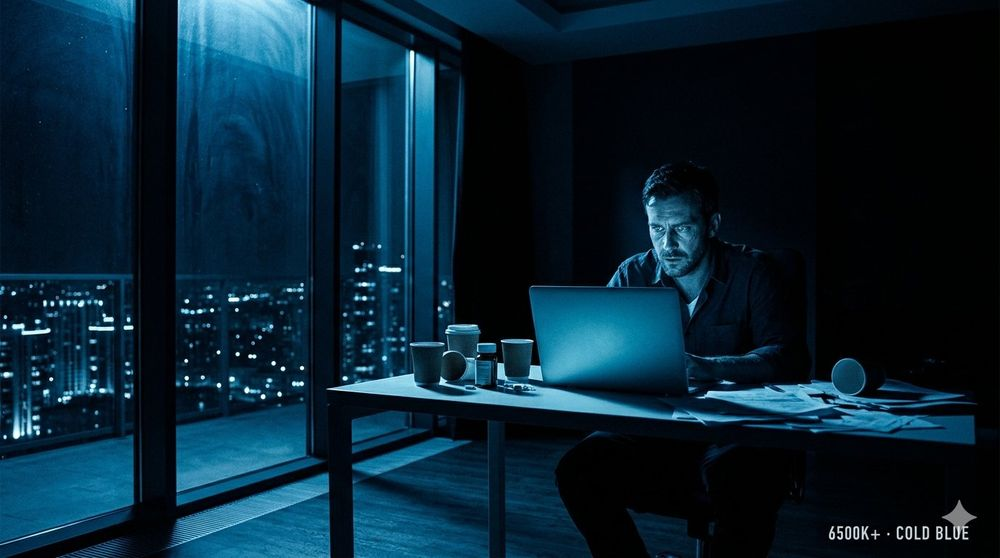
6500K+ · 冷藍光
孤獨 · 壓抑 · 疏離
深夜、心理壓力場景
混合色溫技巧：暖主光＋冷背景光，製造畫面色彩張力，更有電影感。許多電影刻意讓室內暖光（2700K）和窗外夜景（6500K+）同框，就是這個道理。
🌃 高級 進階光效
Rembrandt Lighting（林布蘭光）
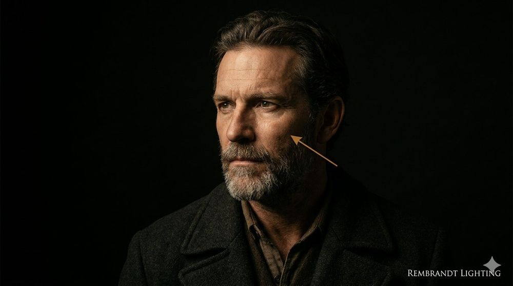
REMBRANDT · 暗面三角形亮斑
光從側面高角度打下來，臉部暗面會出現一個小三角形的亮斑（位於眼睛下方的顴骨）。最具戲劇性和繪畫感的光效，來自17世紀荷蘭畫家林布蘭的肖像作品。適合描繪人物內心深度、故事感強的場景。
Split Lighting（分割光）
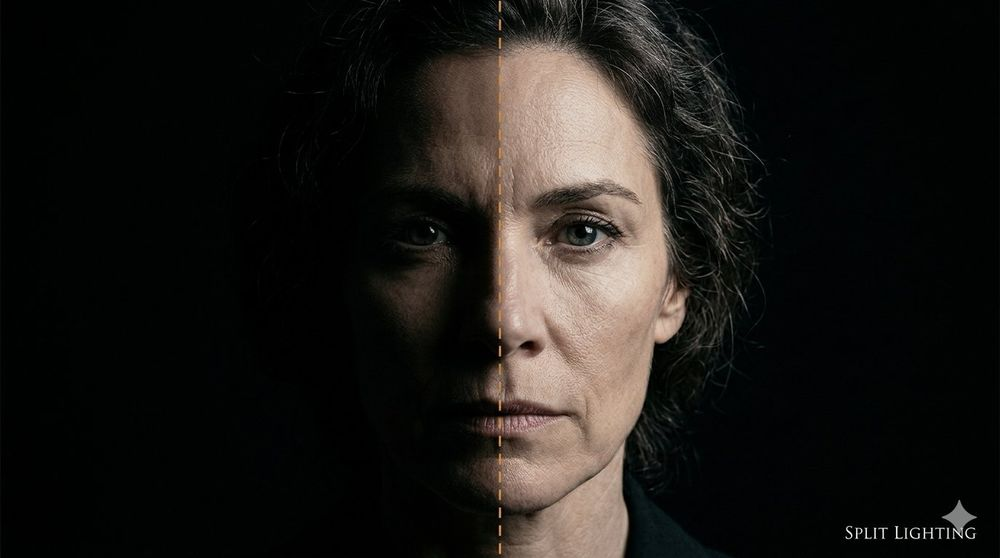
SPLIT · 左右對分明暗
光從正側面90度打，臉部一半完全亮、一半完全暗，中間有一條明確的分界線。極端對比，適合表現角色的矛盾、雙重性、內心掙扎。黑色電影（film noir）經典光效。
有色光（Colored RGB Lighting）
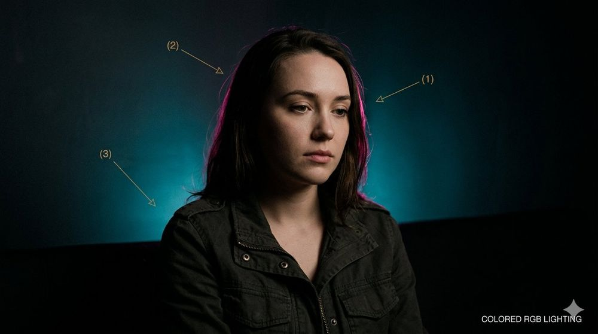
RGB · 色彩層次不失真
關鍵是分層布光：(1) 主光用自然白光維持正確膚色，(2) 輪廓光加顏色（圖中的桃紫色）勾勒頭髮和肩膀，(3) 背景光加另一個顏色（圖中的青藍色）製造氣氛。畫面有強烈色彩層次但人物不失真，是《銀翼殺手2049》和許多現代廣告的標準打法。
👂 入門 聲音的四個層次
電影裡聽到的聲音從來不是單一軌道，而是四個層次疊在一起。理解這個結構，是做出「電影感聲音」的第一步。
FOUR LAYERS OF SOUND · 聲音分層結構
🗣
① 對白
最重要，必須清晰。用領夾麥或槍麥近距離收音。-12dB 最前景。
🌲
② 環境音
場景的「呼吸聲」。每場景錄 30 秒空場，後製鋪底讓空間真實。
👟
③ 擬音
腳步聲、翻書聲、開門聲，後製另錄疊上，增加動作真實感。
🎵
④ 配樂
情緒引導工具，後製加入。對白時要壓低音量（ducking）。
專業秘訣：對白永遠是王，其他三層為它服務。任何時候配樂或環境音蓋過對白，就是混音失敗。後製時要養成習慣：先把對白軌擺好，其他三層再依序加進來。
🎙 入門 麥克風種類
指向性槍麥（Shotgun）
裝在攝影機上方或吊桿上。只收正前方聲音，排除環境噪音。適合固定場景，或當作領夾麥的備用。
無線領夾麥（Lavalier）
夾在演員衣領上，完全無線。演員移動也能收到清晰聲音，多人對話最方便——每位演員夾一個。
📐 入門 槍麥黃金位置
SHOTGUN MIC POSITION · 槍麥黃金位置
槍麥位置是收音品質的關鍵。正確的位置：演員頭頂正上方 30-50cm，麥克風指向嘴巴（略微俯角），保持在鏡頭框架外。距離越近聲音越乾淨，但絕對不能進入畫面。
槍麥四大原則：
1. 麥克風朝向嘴巴
2. 保持在鏡頭框線外
3. 距離越近聲音越乾淨
4. 不要碰到衣服或頭髮
👔 入門 領夾麥的三種藏法
LAV CONCEALMENT · 三種位置比較
三種藏法各有優缺點，依照演員服裝和場景選擇：
- ① 領口內側：最好藏、音質好，但衣物移動時容易摩擦產生雜音
- ② 第二顆扣子：標準位置、穩定可靠，但特寫鏡頭可能會被看到
- ③ 膠帶貼皮膚：最穩定、完全無摩擦音，但需要演員同意（貼身體）
💡 無論哪一種，拍攝前都請演員做轉身、點頭、伸手等幾個動作，戴耳機確認沒有摩擦聲再開始。
🎛 進階 完整收音配置
把所有收音元素放進雙機拍攝現場，完整圖長這樣：
COMPLETE AUDIO SETUP · 完整收音配置
- 🔴 主收音：每位演員一個領夾麥，無線傳到接收器
- 🟡 備用：槍麥在頭頂上方，萬一領夾麥出包的保險
- 🔵 環境音：每個場景開拍前錄 30 秒空場，後製混音用
- 🎧 監聽：導演一定要戴耳機，現場聽到的才是麥克風實際收到的
一人組收音心法：主收音＋備用永遠要有兩層。領夾麥萬一有雜訊，還能靠槍麥救回來。如果只有一套，拍到一半才發現收音出問題，整場戲就要重拍。
🔊 進階 監聽與音量控制
錄音目標音量：
平均：-18dB 到 -12dB
峰值不超過：-6dB（防破音）
不能低於：-30dB（噪音蓋過聲音）
每個場景開始前必做
- 錄30秒空場環境音（後製用）
- 請演員說「1、2、3、4、5」確認音量
- 確認沒有空調、冰箱等低頻噪音
🎚 高級 後製混音基礎
- 對白層：EQ去除80Hz以下低頻，壓縮讓音量均勻
- 環境音層：比對白低15～20dB，持續播放
- 音樂層：有對白時壓低，情緒段落時拉起
| 問題 | 原因 | 解法 |
|---|
| 低頻轟聲 | 風聲、空調 | 高通濾波器（80Hz cut） |
| 回音大 | 空曠室內 | 降噪插件或重新配音 |
| 忽大忽小 | 演員移動 | Compressor自動增益 |
| 背景噪音 | 環境音過強 | iZotope RX降噪 |
📱 S22 + S23 雙機設定
兩台手機統一設定
解析度：4K 24fps
快門速度：1/50（手動鎖定）
白平衡：手動 5500K（兩台同值）
色彩模式：關閉自動HDR，開LOG
對焦：手動，關閉自動對焦
防手震：三腳架拍攝時建議關閉
| 角色 | 機型 | 主要工作 |
|---|
| A機（主） | S23 | 主要構圖，中景或特寫 |
| B機（副） | S22 | 反應鏡頭、廣角、物件特寫 |
雙機同步方法
每顆鏡頭錄製前，在兩台鏡頭前拍手一次。後製用聲波峰值對齊，精確到幀。
🎬 真實拍片工作流
看完了設定表格，這是一人組實際拍攝時現場長什麼樣子。
現場配置：對話場景的雙機擺放
DUAL-CAM LAYOUT · 現場俯視圖
關鍵是你（導演/攝影）站在兩台機器中間，不是躲在任何一台後面。這樣你可以同時看到兩台畫面、兩位演員、光線狀況。A機拍主角中景，B機拍反應鏡頭，一次對話戲就能拿到正反打素材。
- A機（S23）：主要視覺，中景或特寫，跟著劇本意圖走
- B機（S22）：副線素材，反應鏡頭、物件特寫、廣角備用
- 主光：窗戶自然光，打在演員面向的那一側
- 反光板：放在主光對面，補齊陰影面
- 地板膠帶 X 記號：每個演員的固定站位，確保多 take 對焦一致
每顆鏡頭的 SOP 八步驟
SHOT SOP · 鏡頭流程清單
一人組最容易犯的錯是「急著開拍」。當你同時是導演、攝影、收音，每顆鏡頭都要跑完這八步。熟悉之後每顆鏡頭大約 2-3 分鐘，別想省時間跳步驟，現場省 1 分鐘，剪接室要補 10 分鐘。
💡 把這張 SOP 圖印出來貼在拍攝現場看得到的地方，照著跑不會漏。熟悉後步驟會內化成直覺反應。
🎪 必備附件清單
| 附件 | 用途 | 預算（元） |
|---|
| 三腳架＋流體雲台 | 固定鏡頭 | 1,500～3,000 |
| 手機穩定器 | 移動鏡頭 | 3,500 / 租400/天 |
| 冷靴轉接座 | 手機接麥克風 | 200～500 |
| ND濾鏡夾片 | 室外控制曝光 | 300～800 |
| 行動電源 | 長時間錄影 | 500～800 |
| 散熱背夾 | 防過熱降頻 | 300～600 |
| 膠帶（黑＋白） | 標記站位、固定線 | 100 |
📲 推薦拍攝App
Filmic Pro（約NT$600）
最專業的手機拍攝App，獨立控制快門、ISO、白平衡、對焦，支援LOG格式。
Expert RAW（Samsung免費）
官方App，支援LOG格式，操作簡單，免費是最大優點。
Open Camera（免費）
支援手動控制，功能比Filmic Pro少但夠用。
Clapper（數位打板）
記錄Scene、Take、鏡號，方便後製整理素材。
🌟 方案A：零成本（純自然光）
| 工具 | 用途 | 費用 |
|---|
| 大窗戶自然光 | 主光 | 免費 |
| 白色牆壁 | 反射補光 | 免費 |
| 鋁箔紙 | DIY反光板 | 30元 |
| 烘焙紙/描圖紙 | 柔化光源 | 50元 |
💡 早上9～11點、下午3～5點是最好的窗邊光時段。
💡 方案B：低預算購買
| 設備 | 規格 | 預算（元） |
|---|
| 五合一反光板 | 80cm以上 | 250～400 |
| LED板燈 × 2 | 雙色溫可調 | 1,500～3,000 |
| 燈架 × 2 | 180cm以上 | 800～1,500 |
| 柔光箱 | 60×90cm | 500～1,000 |
| 延長線（5米） | 三孔安全型 | 200 |
🎬 方案C：租借（拍攝當天）
推薦租借清單（2天拍攝）：
LED板燈×2（含燈架）→ 800～1,200元
反光板（建議自購） → 250元
柔光箱 → 200元
─────────────────────
合計 → 約1,250～1,650元
租借地點：補給站BJ4、漢口街相機街、FB「台灣影視器材租借交流」
⚠️ 燈光安全注意事項
- 燈架一定要壓重物：沙袋壓住底部，倒下來非常危險
- 電源計算：確認插座能承受所有燈具總瓦數
- 線材整理：電源線用膠帶固定，避免絆倒
🎤 無線領夾麥比較
| 型號 | 音質 | 特色 | 價格（元） |
|---|
| RODE Wireless GO II | ★★★★★ | 2發1收，可獨立錄音 | ~8,500 / 租500/天 |
| DJI Mic 2 | ★★★★☆ | 操作直覺，App整合佳 | ~7,500 / 租400/天 |
| BOYA BY-WM4 Pro | ★★★☆☆ | 輕薄便宜 | ~1,500 |
💡 S22/S23用USB-C接口，選有USB-C輸出的型號，或購買轉接頭。
🔫 槍型麥克風比較
| 型號 | 特色 | 價格（元） |
|---|
| RODE VideoMicro II | 免電池、小巧、裝機頂 | ~3,000 |
| RODE NTG2 | 專業等級，需幻象電源 | ~6,000 / 租300/天 |
| BOYA BY-MM1 | 最便宜入門選擇 | ~800 |
🎧 監聽耳機（必備）
- Sony MDR-7506：業界標準，約3,500元，耐用
- Audio-Technica ATH-M40x：約3,000元，音質優
- Sony MDR-ZX110：入門款，約600元，堪用
⚠️ 一定要封閉式耳機。不要用藍牙耳機，有延遲，無法即時監聽。
📊 預算方案總結
極限省錢（~3,000元）：
BOYA BY-WM4 Pro 1,500
BOYA BY-MM1 800
Sony MDR-ZX110 600
USB-C轉接頭 50
租借方案（拍2天，~1,400元）：
RODE Wireless GO II 1,000
RODE VideoMicro II 400
推薦買斷（~15,000元）：
RODE Wireless GO II 8,500
RODE VideoMicro II 3,000
Sony MDR-7506 3,500
📱 四機規格比較
| 規格 | S22 | S23 | iPhone 16 | iPhone 17 |
|---|
| 感光元件 | 1/1.76" | 1/1.56" | 1/1.28" | 1/1.14" |
| 主鏡頭光圈 | f/1.8 | f/1.8 | f/1.6 | f/1.6 |
| 最高規格 | 8K/24fps | 8K/30fps | 4K/120fps | 4K/120fps |
| LOG格式 | Expert RAW | Expert RAW | Apple Log | Apple Log |
| Cinema模式 | × | × | ✅ | ✅ 增強版 |
🎥 對應舊款專業攝影機
| 手機配置 | 相當於 | 條件 |
|---|
| S22/S23 標準 | Sony FS5
Canon XA35 | 充足光線、固定機位 |
| S22/S23 LOG＋調色 | Sony FS7 Mk I
BMPCC 4K | 光線良好、後製到位 |
| iPhone 16 Cinema | Sony FX3
Canon EOS C70 | LOG後製 |
| iPhone 17（預估） | Sony FX6
RED Komodo | 最佳光線、ProRes RAW |
⚠️ 這個比較是在「同等光線、同等後製」前提下。專業機的優勢：感光元件更大、動態範圍更廣。手機在暗處差距仍然明顯。
🤝 S22+S23 vs iPhone 16+17
| 項目 | S22+S23 | iPhone 16+17 |
|---|
| 色彩一致性 | ★★★★★ | ★★★★★ |
| 後製調色難度 | 中（飽和度高） | 低（Apple Log自然） |
| Cinema功能 | 無 | 有，可追焦虛化 |
| 成本 | 你已擁有，零成本 | 需額外購買 |
| 操作熟悉度 | 已熟悉 | 需重新適應 |
結論：你的S22+S23已經足夠。把預算投入燈光、收音和後製，對成片質感的提升遠大於換攝影機。
📋 質感的真正來源
💡
光線 60%
好光線讓手機拍出電影感，壞光線讓RED拍出廉價感。
🎙
聲音 30%
清晰收音直接提升「專業感」，觀眾感知最直覺。
✂️
剪輯 8%
畫面接畫面的節奏，決定情緒是否跟著走。
📱
攝影機 2%
前三點到位後，手機和專業機差距只剩2%。